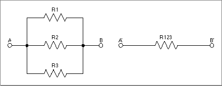

About the IEEE Standard
PowerPC Numerics is a floating-point environment that complies with IEEE Standard 754. There are two IEEE standards for floating-point arithmetic:
IEEE Standard 754 for binary floating-point arithmetic and IEEE Standard 854 for radix-independent floating-point arithmetic. When you see the term IEEE standard in this book without a number following, it means IEEE Standard 754.The IEEE standards ensure that computers represent real numbers as accurately as possible and that computers perform arithmetic on real numbers as accurately as possible. Although there are infinitely many real numbers, a computer can represent only a finite number of them. Computers represent real numbers as binary floating-point numbers. Binary floating-point numbers can represent real numbers exactly in relatively few cases; in all other cases the representation is approximate. For example, 1/2 (0.5 in decimal) can be represented exactly in binary as 0.1. Other real numbers that can be represented exactly in decimal have repeating digits in binary and hence cannot be represented exactly, as shown in Table 1-1. For example, 1/10, or decimal 0.1 exactly, is 0.000110011 . . . in binary. Errors of this kind are unavoidable in any computer approximation of real numbers. Because of these errors, sums of fractions are often slightly incorrect. For example, 4/3 - 5/6 is not exactly equal to 1/2 on any computer, even on computers that use IEEE standard arithmetic.
Table 1-1 Approximation of real numbers Fraction Decimal approximation Binary approximation 1/10 0.1000000000[3] 0.000110011001100110011001101 1/2 0.5000000000[3] 0.100000000000000000000000[3] 4/3 1.333333333 1.01010101010101010101011 5/6 0.8333333333 0.110101010101010101010101 4/3 - 5/6 0.4999999997 0.100000000000000000000001 The IEEE standard defines data formats for floating-point numbers, shows how to interpret these formats, and specifies how to perform operations (known as floating-point operations) on numbers in these formats. It requires the following types of floating-point operations:
The IEEE standard requires that the basic arithmetic operations have the following attributes:
- basic arithmetic operations (add, subtract, multiply, divide, square root, remainder, and round-to-integer)
- conversion operations, which convert numbers to and from the floating-point data formats
- comparison operations, such as less than, greater than, and equal to
- environmental control operations, which manipulate the floating-point environment
- The result must be accurate in the precision in which the operation is performed. When a numerics environment is performing a floating-point operation, it calculates the result to a predetermined number of binary digits. This number of digits is called the precision. The result must be correct to the last binary digit.
- If the result cannot be represented exactly in the destination data format, it must be changed to the closest value that can be represented, using rounding. See the section "Careful Rounding" on page 1-5 for more information on why careful rounding is important.
- If an invalid input is provided or if the result cannot be represented exactly, a floating-point exception must be raised. See the section "Exception Handling" on page 1-6 for a description of why exception handling is important in floating-point arithmetic.
Starting to Use IEEE Arithmetic
You can get the benefit of much of the IEEE standard without special programming techniques; you simply use the floating-point variable formats and operations available in the programming language in which you are working, and the computer takes care of the rest. Other features might require changes to your applications. If you are new to numerical programming, you should approach the IEEE standard features in three stages:If you already use the IEEE standard features but your application is written for a non-Macintosh computer, see Appendix B, "Porting Programs to PowerPC Numerics."
- Recompile your old programs with no changes; you will get many of the benefits.
- Make small changes to obtain more benefits. For example, at this stage you might remove all code that tests for division by zero.
- Use the advanced features, such as environmental controls, for special applications.
Careful Rounding
If the result of an IEEE arithmetic operation cannot be represented exactly in binary format, the number is rounded. IEEE arithmetic normally rounds results to the nearest value that can be represented in the chosen data format. The difference between the exact result and the represented result is the roundoff error.The IEEE standard requires that users be able to choose to round in directions other than to the nearest value. For example, sometimes you might want to know that rounding has not invalidated a computation. One way to do that would be to force the rounding direction so that you can be sure your results are higher (or lower) than the exact answer. Because it conforms to the IEEE standard, PowerPC Numerics gives you a means of doing that. Fully developed, this strategy is called interval arithmetic (Kahan 1980). For complete details on rounding directions, see Chapter 4, "Environmental Controls."
The following example is a simple demonstration of the advantages of careful rounding. Suppose your application performs operations that are mutually inverse; that is, operations , , such that . There are many such operations, such as
,
,
Suppose is the computed value of , and is the computed value of . Because many numbers cannot be represented exactly in binary, the computed values and will often differ from and . Even so, if both functions are continuous and well behaved, and if you always round and to the nearest value, you might expect your computer arithmetic to return x when it performs the cycle of inverse operations, . It is difficult to predict when this relation will hold for computer numbers. Experience with other computers says it is too much to expect, but IEEE arithmetic very often returns the correct inverse value.
The reason for IEEE arithmetic's good behavior with respect to inverse operations is that it rounds so carefully. Even with all operations in, say, single precision, it evaluates the expression 3 1/3 to 1.0 exactly; some computers that do not follow the standard do not evaluate this expression exactly. If you find that surprising, you might enjoy running the code example in Listing 1-1 on a computer that does not use IEEE arithmetic and then on a PowerPC processor-based Macintosh computer. The default rounding provided by the numerics environment gives good results; the PowerPC processor-based Macintosh computer prints "No failures." The program will fail on a computer that doesn't have IEEE arithmetic--in particular, that doesn't round halfway cases in the same way that the IEEE standard's default rounding direction mode does.
Listing 1-1 Inverse operations
#include <stdio.h> main() { float x, y, a, b; int ix, iy, int nofail = 1; /* Boolean, initialized to true */ for (ix = 1; ix <= 12; ix++) { if ((ix != 7) && (ix != 11)) { /* x is a sum of powers of two */ for (iy = 1; iy <= 50; iy++) { x = ix; y = iy; a = y / x; b = x * a; /* b == (x * y / x) == y */ if (b != y) { nofail = 0; /* false */ printf("It failed for x = %d, y = %d\n", ix, iy); } } } } if (nofail) printf("No failures\n"); }Exception Handling
The IEEE standard defines five exceptions that indicate when an exceptional event has occurred. They areThere are three ways your application can deal with exceptions:
- invalid operation
- underflow
- overflow
- division by zero
- inexact result
The IEEE standard lets programs deal with the exceptions in reasonable ways. It defines the special values NaN (Not-a-Number) and Infinity, which allow a program to continue operation; see the section "Interpreting Floating-Point Values" in Chapter 2, "Floating-Point Data Formats." The IEEE standard also defines exception flags, which a program can test to detect exceptional events.
- Continue operation.
- Stop on exceptions if you think they will invalidate your results.
- Include code to do something special when exceptions happen.
IEEE arithmetic allows the option to stop computation when exceptional events arise, but there are good reasons why you might prefer not to have to stop. The following examples illustrate some of those reasons.
Example: Finding Zero Return Values
Suppose you want to find the first positive integer that causes a function to cross the x-axis. A simple version of the code might look like this:for (i = 0; i < MAXVALUE; i++) if (func(i) == 0) printf("It crosses when x = %g\n", i);Further, suppose thatfuncwas defined like this:double func(double x) { return(sqrt(x - 3)); }The intent of theforloop is to find out where the function crosses the x-axis and print out that information; it does not really care about the value returned fromfuncunless the value is 0. However, this loop will fail wheniis less than 3 because you cannot take the square root of a negative number. With a C compiler that supports PowerPC Numerics, performing the square root operation on a negative number returns a NaN, allowing the loop to produce the desired result. To obtain the desired result on all computers, something more cumbersome would have to be written. By allowing the square root of a negative number, PowerPC Numerics allows more straightforward code.This program fragment demonstrates the principal service performed by NaNs: they permit deferred judgments about variables whose values might be unavailable (that is, uninitialized) or the result of invalid operations. Instead of having the computer stop a computation as soon as a NaN appears, you might prefer to have it continue if whatever caused the NaN is irrelevant to the solution.
Example: Searching Without Stopping
Suppose a program has to search through a database for a maximum value that has to be calculated. The search loop might call a subroutine to perform some calculation on the data in each record and return a value for the program to test or compare. The code might look like this:max = -INFINITY; for (i = 0; i < MAXRECORDS; i++) if((temp = computation(record[i].value)) > max) max = temp;Suppose that thevaluefield of therecordstructure is not a required field when the data is entered, so that for some records, data might be nonexistent or invalid. In many machines, that would cause the program to stop. To avoid having the program stop during the search, you would have to add tests for all the exceptional cases. With PowerPC Numerics, the subroutinecomputationdoes not stop for nonexistent or invalid data; it simply returns a NaN.This is another example of the way arithmetic that includes NaNs allows the program to ignore irrelevancies, even when they cause invalid operations. Using arithmetic without NaNs, you would have to anticipate all exceptional cases and add code to the program to handle every one of them in advance. With NaNs, you can handle all exceptional cases after they have occurred, or you can simply ignore them, as in this example.
Example: Parallel Resistances
Like NaNs, Infinities enable the program to handle cases that otherwise would require special programming to keep from stopping. Here is an example where arithmetic with Infinities is entirely reasonable.When three electrical resistances R1, R2, and R3 are connected in parallel, as shown in Figure 1-1, their effective resistance is the same as a single resistance whose value R123 is given by this formula:
Figure 1-1 Parallel resistances

The formula gives correct results for positive resistance values between 0 (corresponding to a short circuit) and ° (corresponding to an open circuit) inclusive. On computers that do not allow division by zero, you would have to add tests designed to filter out the cases with resistance values of zero. (Negative values can cause trouble for this formula, regardless of the style of the arithmetic, but that reflects their troublesome nature in circuits, where they can cause instability.)
Arithmetic with Infinities usually gives reasonable results for expressions in which each independent variable appears only once.
[3] Exact value